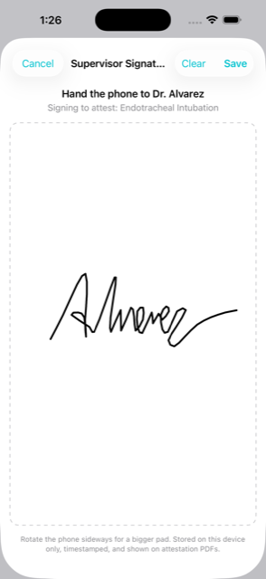
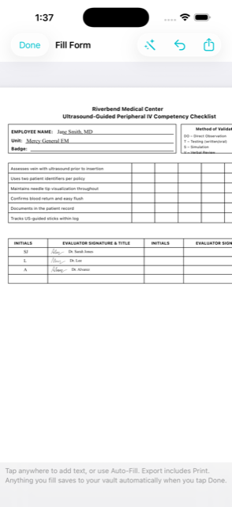
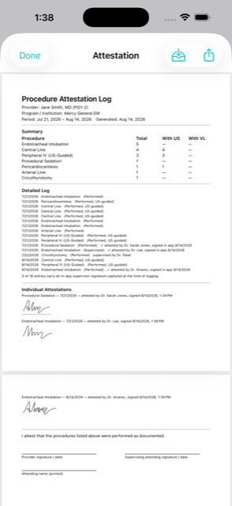
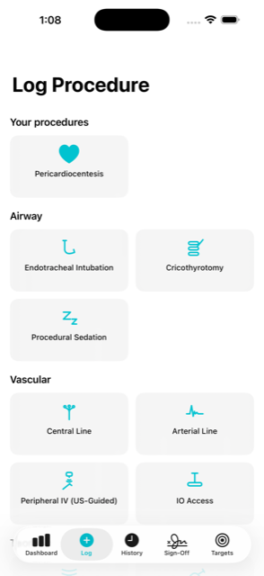

ProcVault
Track, prove & get signed off. Procedure logging built by an ER physician.
Now available on the App Store. Free to download — Pro unlocks the sign-off tools.





Signed off at the bedside
Hand the phone to your attending — they sign the entry right there, like a delivery signature, timestamped. Your attestation PDF shows every individual signature.
Two-tap logging
Tap the procedure, tap save — at the bedside, in seconds. Role and ultrasound guidance tracked the way committees actually ask.
Progress you can see
Set credentialing targets and watch counts fill. "8 of 10 central lines, 6 with ultrasound" at a glance.
Reads your hospital's forms
Import or camera-scan any checkoff form and tap Auto-Fill: on-device recognition places your info in the blanks — and fills the evaluator table with the supervisors who signed your entries, real signatures included.
Signature-ready PDFs
Attestation summaries with every individual signature embedded, plus standards-aligned templates: a hospital-style US-IV competency record, an ultrasound credentialing tally, and FPPE-friendly validation.
Every procedure
19 one-tap tiles, 60+ more in search, and custom entries for anything else. Frequently used procedures surface automatically.
PHI-safe images
Attach ultrasound stills for documentation — on-device scanning proposes redactions you review before anything saves.
Travels with you
Scan your completed, signed forms into the vault and show them at your next site. Built for travelers and locums — one site's sign-off is often accepted by the next.
Nothing leaves your phone
No account. No server. No analytics. The App Store privacy label says "Data Not Collected" — because there's nothing to collect.
For residents, nurses, NPs, PAs, and students. Core logging is free forever. ProcVault Pro (PDFs, form filling, images, CSV) is $3.99/month, $19.99/year, or $49.99 once.
The sign-off chase, ended
Every clinician knows the ritual: carry a paper checkoff for weeks, chase the same attending twice, lose the sheet, start over. ProcVault inverts it — signatures are collected the moment each procedure happens, and the paperwork is generated after the fact.
1. Log at the bedside — two taps, with role and technique (ultrasound guidance, video laryngoscopy) recorded the way committees actually ask.
2. Get signed on the spot — hand your phone to the supervisor; they sign like a delivery signature, timestamped and bound to that exact procedure. Busy attending? The dashboard keeps an awaiting-signature list for next shift.
3. Let the app fill the paperwork — import or scan your hospital's own form and tap Auto-Fill: on-device recognition puts your details in the blanks and fills the evaluator table with the supervisors who signed — initials, names, and their actual signatures.
4. Carry the proof forever — completed, signed documents live in your vault and travel with you to the next site. Travelers and locums never start from zero again.
All of it on-device. No accounts, no servers — nothing to breach.
Guides
How to log procedures for credentialing — what committees actually ask for, and the habits that make a log survive.
Ultrasound-guided IV competency — how nurses get signed off, and how to prove your numbers.
Support
Contact
Questions, bug reports, or procedure requests:
tesladoc12@gmail.com
Include your iOS version and what you were doing when the issue occurred — it helps a lot.
Common questions
Where is my data stored?
Entirely on your device. ProcVault has no servers and no accounts. Deleting the app deletes all data.
How do image redactions work?
Images are scanned on-device and detected text is blacked out before saving. You review every redaction — always verify no patient identifiers remain.
How do I restore a Pro purchase?
Profile → Restore Purchases, signed in with the same Apple ID.
Missing a procedure?
Log anything via “Something else…” on the Log tab, and email us so we can add it for everyone.
Privacy Policy · © 2026 ProcVault · Not a medical device; a personal record-keeping tool.